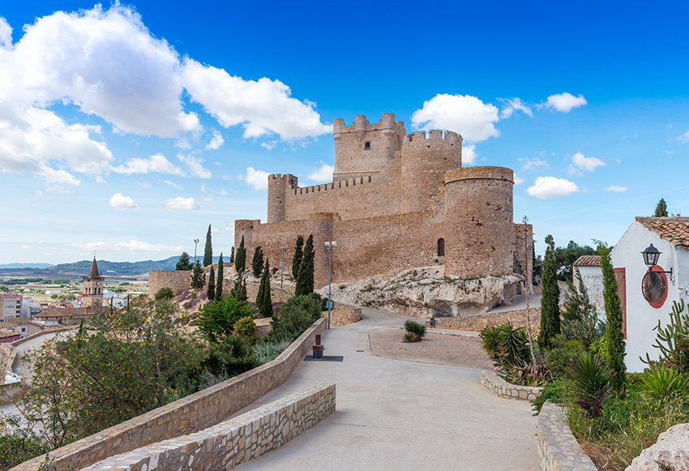
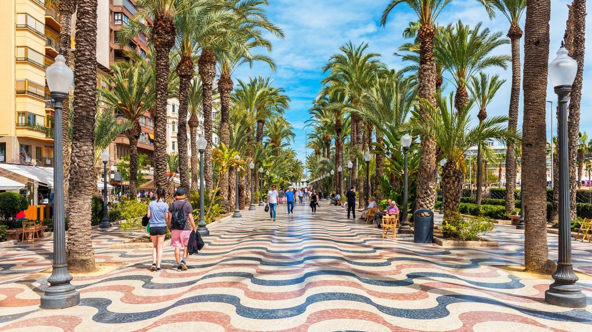
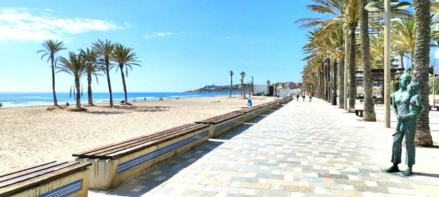

Alicante es una ciudad portuaria en la Costa Blanca, al sureste de España, conocida por sus playas, clima cálido y patrimonio histórico.
Castillo de Santa Bárbara:
Una fortaleza medieval situada en el monte Benacantil que
ofrece vistas panorámicas de toda la bahía. Se puede acceder a pie o mediante el ascensor
frente a la playa del Postiguet.

Explanada de España:
El icónico paseo marítimo de la ciudad, famoso por su mosaico ondulado
compuesto por más de 6 millones de teselas de mármol.

Playas:
La Playa del Postiguet es la más céntrica, mientras que la Playa
de San Juan es extensa y cuenta con una amplia oferta gastronómica.
